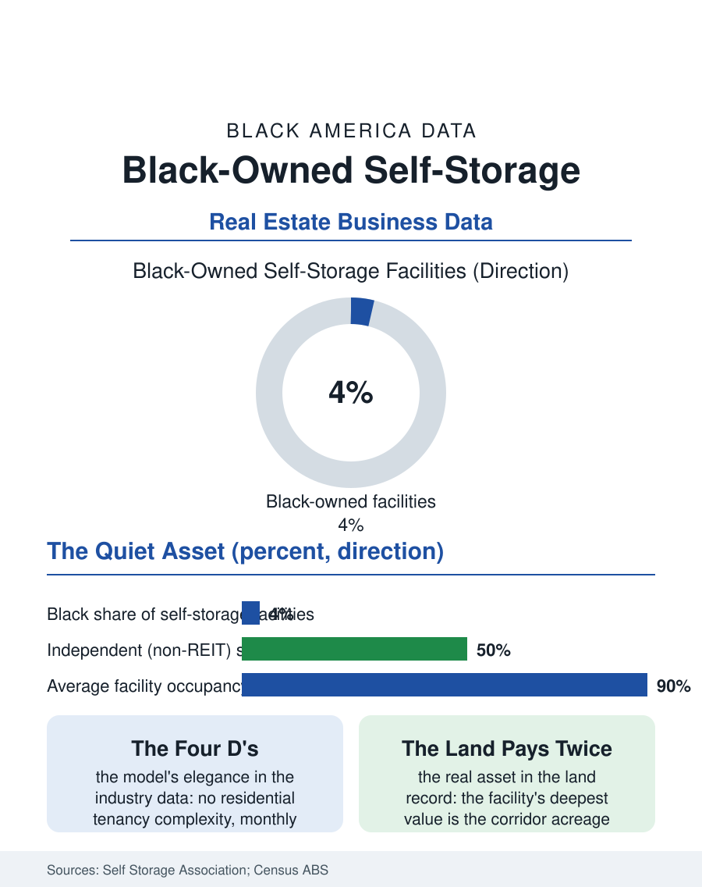

Black Business
Paid to Wait: Black-Owned Self-Storage
Self-storage is real estate's quietest fortune, and Black owners hold corridor land in its independent tier, paid monthly to wait. The storage file.

Self-storage is the real estate industry's quietest fortune: concrete boxes rented by the month at margins other landlords envy, an asset class institutional investors spent two decades consolidating. Black-owned storage facilities operate at the industry's independent tier, a small share of a sector whose public giants dominate the map, in a business whose economics turn on land bought cheap and occupancy held high. This article reads the storage file.
The Simplest Business in Real Estate
The model's elegance is the file's starting point: no tenants' rights complexities of the residential kind, no toilets per unit to maintain, a manager or increasingly a kiosk and an app, and rents that can be adjusted monthly in most jurisdictions with a notice. The industry data record the consequences, operating margins far above other real estate, occupancy rates that held through recessions as downsizing, divorce, deployment, and death, the four D's of demand, kept the units full. The public companies and REITs own the prime corridors, and the independent tier, thousands of family facilities, holds the secondary markets and the older stock. Black-owned facilities appear in the trade data in that independent tier, frequently as the second act of a real estate career that began in the rental houses or the land: an operator assembles acreage on a growing corridor, phases the buildings as the equity allows, and converts raw land into the corridor's most forgiving income while it appreciates, storage being the classic hold use that pays its own carry. The development economics favor the patient: construction is simple, entitlement is easier than housing's gauntlet in most jurisdictions, though a growing list of cities, reacting to corridor aesthetics and land competition, have tightened storage zoning in the recent record.
The Customer in the Unit
The demand side has a demographic file of its own that this atlas can read at a glance. Storage use in the consumer surveys tracks life disruption and housing inadequacy together: the doubled-up household's overflow, the downsizing elder's unchosen archive, the military family's deployment gear, the small business's inventory, the evicted household's everything, held at a monthly rate against a thirty-day clock. Renters and lower-income households use storage at rates that surprise the industry's suburban image, and Black households, overrepresented among the housing-insecure in the cost burden file, are a real segment of the customer base, which loads the independent facility in a Black neighborhood with a complicated community meaning: it is simultaneously a local Black-owned asset, a service its neighbors genuinely need, and a monthly bill extracted from their disruptions. The industry's consumer file, the auction lien sales, the rate escalation practices on existing tenants that the public companies' algorithms pioneered, has drawn the regulatory attention of the recent years, and the independent operators' competitive response, level pricing and a face at the counter, is the small-business counterposition this atlas records in sector after sector.
Land, Patience, and the Corridor
The storage file closes where it began, on the land. The facility's deepest value is rarely the boxes but the acreage under them on a corridor the city is growing toward, and the Black owners in the sector hold, in several documented cases, positions assembled decades ago at prices the current market would not believe, the land bank strategy executed by default through the simple refusal to sell. The succession and consolidation pressures arrive here as everywhere in the business files, the public companies and their acquisition arms bidding for the independent tier's cash flow at multiples that test every founder's patience, with the same ownership arithmetic: each sale converts a community's asset into a fund's line item, and each refusal keeps the corridor's economics partially local. The file's forward indicators are the asset class's own: institutional appetite cooling and returning with the rate cycle, climate-controlled conversion of older stock, and the boat-and-RV storage niche riding the recreational economy. The storage file's final judgment is the one its operators would give. Of all the businesses in this atlas, storage asks the least of its customers' dreams and the most of its owner's patience, and its Black owners, holding good land with a paying use on it, are playing the oldest winning strategy in the property file, one monthly invoice at a time.
More in Black Business
Black-Owned Businesses: Counts, Receipts, and the Representation Gap
About 161,000 Black-owned employer firms and three million solo ventures: how the Census Bureau counts Black business ownership, where firms concentrate, and the gap between population share and business share.
Black Median Net Worth: The Wealth Gap in Federal Reserve Data
The Federal Reserve puts Black median family net worth at $44,900, against $285,000 for White families — about 16 cents on the dollar. The widest gap in economic data.
Black Buying Power: The $1.8 Trillion Consumer Economy
Black buying power is estimated at about $1.8 trillion — larger than the economy of most nations. What the figure measures, who produces it, and what it buys.
Source: Self Storage Association industry data; U.S. Census Bureau, Annual Business Survey (NAICS 53113); commercial real estate reports.